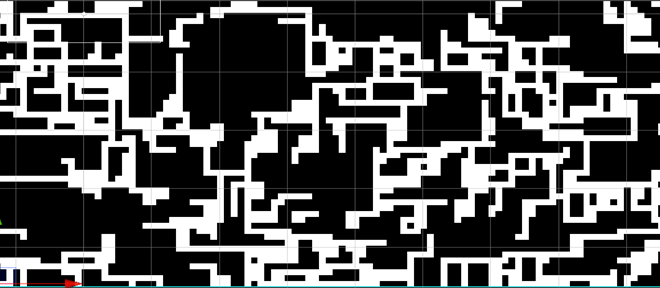

Quality of Wave Function Collapse(WFC) in level generation
For my final year project I have decided to study the the Wave Function Collapse(WFC) Algorthm in the use of level generation evealutating the quaility of out put.
To access the quality of WFC in level generation I’m currently developing a project that will have participants play multiple game levels some being made by WFC and the others being made manually. For this project I gave decided to make a basic game where the player will have to navigate a dungeon collecting coins. The participants will then carry out a survey which will allow me to determine the quality of the WFC algorithm in level generation.